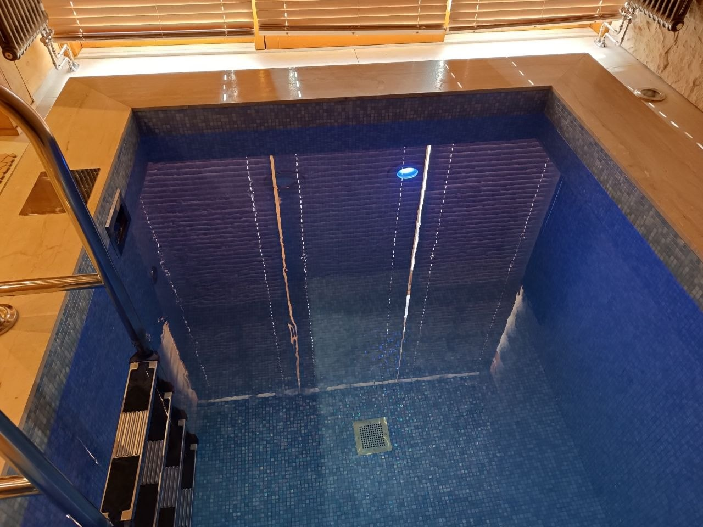

Оглавление
С чего начать весенний запуск бассейна
Весной задача владельца — безопасно снять зимнее укрытие, проверить чашу и оборудование, удалить загрязнения и оценить воду до обработки. Последовательность зависит от типа бассейна и способа консервации.
Цвет, запах и осадок — признаки для проверки, а не самостоятельный диагноз. Зелёный оттенок может быть связан с водорослями, но причину подтверждают измерениями и осмотром системы.
Не включайте оборудование, пока не проверили, что зимние заглушки и элементы консервации сняты по предусмотренной схеме, а краны и соединения находятся в рабочем положении. Если схема неизвестна или обнаружены повреждения, запуск лучше поручить специалисту.
Не компенсируйте мутность увеличенной дозой реагента без теста и проверки фильтрации. Применяйте средства только по маркировке и инструкции изготовителя, учитывая совместимость с уже внесёнными препаратами.
Ниже — порядок первичного осмотра и очистки. Он не заменяет проектную схему зимней консервации и руководство оборудования; при сомнениях не запускайте неизвестный узел наугад.
Осмотр чаши, оборудования и воды
Перед очисткой осмотрите укрытие, чашу и доступные элементы. Отметьте трещины, смещение деталей, следы влаги у труб и закладных, а также изменения уровня воды, которые заметили во время зимнего простоя.
До включения насоса проверьте корзину префильтра, доступные соединения и фильтр согласно его инструкции. Не вскрывайте оборудование под давлением и не переходите к электрической части самостоятельно.
После запуска циркуляции проверьте, нет ли протечек, необычного шума, сигналов ошибки и отклонения показаний фильтра от обычного для вашей системы режима. Затем измерьте параметры воды методом, подходящим для используемых реагентов.
Что проверить перед внесением реагентов
- Положение и состояние зимнего укрытия; не допускайте попадания скопившейся грязи в чашу при снятии.
- Осадок и крупный мусор на дне, загрязнение ватерлинии и доступных поверхностей.
- Видимые трещины, смещение закладных, повреждение швов и следы утечки.
- Сняты ли заглушки и восстановлены ли соединения в порядке, предусмотренном схемой консервации.
- Состояние корзин, префильтра насоса и доступных элементов фильтра по руководству оборудования.
- Ошибки автоматики, необычные звуки, вибрацию или протечки при штатном запуске.
- Показания подходящего теста воды до внесения средств для коррекции.
Запишите исходные измерения и выполненные действия. Если тест показывает значение вне диапазона инструкции реагента или оборудования, сначала уточните порядок коррекции, а не смешивайте препараты самостоятельно.
Если причина помутнения неясна, результат измерений нестабилен или оборудование работает нештатно, остановитесь на первичном осмотре и обратитесь к специалисту с журналом наблюдений и данными о системе.
Что проверить после снятия консервации
До купального сезона полезно разделить операции на запусковые и регулярные. Этот список — ориентир; точные интервалы и действия определяются руководствами фильтра, насоса, автоматики и средств обработки.
Во время первичного запуска
- Снять укрытие так, чтобы мусор с него не попал в чашу; удалить крупные загрязнения с поверхности.
- Очистить чашу подходящим для материала способом, уделив внимание ступеням и ватерлинии.
- Восстановить трубные соединения и арматуру согласно схеме зимней консервации.
- Запустить циркуляцию по штатной процедуре и осмотреть доступные соединения на протечки.
- Проверить фильтр и показания манометра в соответствии с инструкцией конкретной модели.
- Измерить воду и записать значения до коррекции; средства применять по их инструкции.
После выхода системы в штатный режим
- Сверять показания воды с инструкцией к тестам и средствами водоподготовки.
- Следить за уровнем воды, состоянием поверхностей и заметными изменениями после запуска.
- Фиксировать режим работы насоса и показания фильтра, чтобы видеть отклонения от обычного режима.
- Обслуживать фильтр и предварительные корзины только по руководству оборудования.
- Проверять настройки автоматики по документации; калибровку выполнять по процедуре изготовителя.
Запуск не заканчивается в момент, когда насос включился. После восстановления циркуляции ещё раз осмотрите соединения и оцените, как система ведёт себя при штатной работе.
Необычный шум, утечка, сообщение об ошибке или быстрое ухудшение воды — повод остановиться и выяснить причину. Не меняйте режимы и дозировки наугад.
Пошаговый порядок действий при проблемах с водой
Если после весеннего запуска вода мутная или окрашена, сначала отделите механическое загрязнение от возможной проблемы водоподготовки. Ниже приведён порядок первичных действий без универсальных дозировок и сроков.
Шаг 1. Уберите видимый мусор и осмотрите чашу
Снимите крупный мусор сачком, осмотрите дно, ступени и ватерлинию. Не используйте средство для очистки, пока не проверили, что оно подходит для материала чаши и совместимо с её отделкой.
Шаг 2. Проверьте параметры воды
Измерьте параметры, которые предусмотрены вашей системой обработки, и сопоставьте их с инструкциями к тесту и реагентам. Не переносите диапазоны из случайных интернет-советов на другой тип бассейна или средство.
Шаг 3. Убедитесь в исправности фильтрации
Осмотрите корзины и фильтр, затем сравните показания манометра с обычным рабочим состоянием и руководством модели. Промывку или очистку выполняйте только по инструкции фильтра; не разбирайте систему под давлением.
Шаг 4. Выполните механическую очистку
Очистите поверхности инструментом, подходящим для отделки. Если загрязнение не удаляется обычной механической очисткой, сначала установите его характер и совместимость чистящего средства, а не усиливайте трение или концентрацию химии наугад.
Шаг 5. Повторно оцените результат
После очистки и предусмотренной обработки повторите измерения в срок и способом, указанными изготовителем средств. Запишите показания, состояние фильтра и внесённые препараты; если вода снова меняется или оборудование работает нештатно, нужна диагностика причины.
Не переходите к следующему реагенту, пока не учтены ограничения совместимости и время, указанное в инструкции применённого продукта.
Таблица причин и действий
Признаки в таблице помогают выбрать, что проверить первым. Они не устанавливают причину сами по себе, поэтому не заменяют измерения и инструкцию оборудования.
| Признак | Вероятная причина | Что проверить | Решение |
|---|---|---|---|
| Мутная вода | Мелкая взвесь, загрязнённый фильтр или параметры воды вне рабочего диапазона | Показания теста, состояние фильтра, штатный поток и давление по руководству модели | Удалить видимый мусор, обслужить фильтр по инструкции и корректировать воду только после измерений |
| Зелёная вода | Возможное развитие водорослей или иное изменение состава воды | Результаты теста, циркуляцию и работу фильтра | Сначала удалить загрязнения и проверить систему; препарат выбирать по анализу и инструкции |
| Запах хлора | Сам запах не позволяет определить концентрацию или причину | Показатели воды подходящим тестом и условия эксплуатации бассейна | Не добавлять реагент по запаху; проверить воду и следовать маркировке выбранного средства |
| Пена на поверхности | Поверхностно-активные вещества, загрязнения или особенности уже внесённых средств | Историю использования бассейна и препаратов, тесты воды и фильтр | Удалить пену и выяснить источник; замену воды или коррекцию согласовать с инструкцией и состоянием системы |
| Высокое давление на фильтре | Возможное загрязнение фильтра или ограничение потока | Сравнить показание с обычным состоянием и пределами из паспорта фильтра | Выполнить предусмотренную производителем очистку; при повторном отклонении проверить систему |
Последовательность весеннего запуска
| Этап | Что проверить | Условие перехода дальше |
|---|---|---|
| Снятие укрытия | Удалить мусор с покрытия и осмотреть чашу | Нет видимых повреждений, требующих отдельной оценки |
| Восстановление схемы | Сверить заглушки, краны и соединения с планом консервации | Неизвестные или повреждённые узлы проверены специалистом |
| Проверка циркуляции | Запустить штатную систему и осмотреть доступные соединения | Нет протечек, ошибок и необычного шума |
| Подготовка воды | Измерить параметры и очистить чашу и фильтр по инструкциям | Средства применяются в соответствии с тестом и маркировкой |

Типичные ошибки при обслуживании бассейна
При весеннем запуске особенно рискованны действия без проверки схемы консервации и фактического состояния оборудования.
- Добавление химии без предварительных измерений и попытка «исправить» воду только реагентами, игнорируя состояние фильтрации и циркуляции.
- Включение насоса до проверки соединений, заглушек и штатного положения арматуры.
- Внесение реагента по цвету или запаху, без измерения воды и чтения инструкции.
- Промывка или разбор фильтра не по процедуре производителя.
- Изменение уставок автоматики или калибровка датчиков без руководства конкретной модели.
- Слив воды без оценки конструкции чаши, проекта и грунтовых условий.
Порядок запуска важнее попытки быстро исправить воду
Цвет, мутность или запах не определяют причину сами по себе. Сопоставьте осмотр чаши, циркуляцию, состояние фильтра и результаты теста воды.
Не назначайте препарат и дозу по внешнему виду воды; руководствуйтесь измерениями и инструкцией продукта.
При неизвестной схеме, утечке, повреждении или ошибке оборудования остановите запуск до выяснения причины.
Порядок очистки фильтра, применения тестов и реагентов берите из документов конкретных моделей и продуктов.
Как проверить, что запуск прошёл штатно
Переходите к обычной эксплуатации, когда система работает в предусмотренном режиме, доступные соединения не протекают, нет ошибок оборудования, а вода проверена подходящим тестом. Для допуска к купанию учитывайте требования изготовителя применённого средства.
Не считайте один успешный запуск доказательством исправности скрытых участков или гарантией стабильности воды. При новом шуме, утечке или ошибке остановите оборудование и разберитесь с причиной.
Перед переходом к штатной эксплуатации проверьте:
- все ли заглушки и соединения восстановлены по схеме зимней консервации;
- нет ли видимых протечек после запуска циркуляции;
- работают ли насос и фильтр без необычных шумов и сообщений об ошибках;
- соответствуют ли результаты тестирования воды указаниям применённых средств;
- выдержаны ли условия и ограничения до допуска купающихся по инструкции продукта.
Если хотя бы один пункт не выполнен, выясните причину до обычного использования бассейна; не пытайтесь скрыть отклонение дополнительной дозой химии.
Когда нужен сервис бассейна
Обратитесь к специалисту, если схема консервации неизвестна, обнаружены повреждения или утечки, насос не запускается штатно либо автоматика показывает неисправность.
Помощь также нужна, если повторные измерения и обычная очистка не объясняют изменение воды, параметры невозможно сопоставить с инструкцией или вы не уверены в безопасной последовательности подключения.
Объём проверки зависит от проблемы: это может быть осмотр доступных узлов, контроль циркуляции, проверка фильтра или оценка водоподготовки по данным измерений.
Перед началом работ уточните, что именно входит в осмотр и какие результаты будут зафиксированы. Необходимость ремонта определяют после установления причины, а не по одному внешнему признаку.
Если проблема локальная и понятная, достаточно согласовать конкретную проверку. При нескольких симптомах специалисту полезно передать схему, журнал измерений и список уже выполненных действий.
Материалы для следующего шага
Если вода после запуска остаётся мутной, смотрите отдельный разбор диагностики помутнения. Принципы циркуляции и фильтра описаны в статье о фильтрации воды, а весенняя последовательность расконсервации — в материале о запуске бассейна после зимы.
Что занести в журнал весенней чистки
Этот раздел показывает, какие данные полезно сохранить после чистки. Полный порядок расконсервации и пуска оборудования вынесен в отдельную инструкцию.
Отметьте видимые повреждения отделки, швов и доступных закладных; неизвестные узлы не разбирайте без схемы и паспорта.
После восстановления системы по схеме консервации проверяйте насос и фильтр по руководствам их моделей. При ошибке или утечке прекратите запуск.
Для воды используйте подходящий тест и соблюдайте инструкции к нему и реагентам.
При помутнении сопоставьте результаты тестов, состояние фильтра и историю ухода; цвет сам по себе не указывает на препарат.
Запишите, что уже проверено и какие действия выполнены.
Исходное состояние чаши и оборудования
До работ уточните назначение чаши и планируемую нагрузку; для общественного объекта действуют отдельные требования.
У открытой чаши осмотрите мусор и состояние укрытия, но не подменяйте этим проверку водоподготовки.
Если схема консервации или данные оборудования отсутствуют, восстановите их по проекту и паспортам до обслуживания.
Записи после чистки
Зафиксируйте исходное состояние и результаты выбранных проверок.
Сохраните:
- состояние укрытия, чаши и видимых узлов;
- результаты тестов, дату и применённый метод;
- операции с фильтром и насосом, выполненные по паспортам;
- наименование и количество применённых средств согласно их инструкции;
- замеченные утечки, ошибки и необычное поведение оборудования.
Записи позволяют сравнить состояние до и после чистки и не повторять уже выполненное без проверки.
Храните журнал рядом со схемой консервации и паспортами оборудования.
При неисправности журнал помогает передать специалисту наблюдения, но не заменяет диагностику.
FAQ — частые вопросы о чистке бассейна после зимы
Когда начинать чистку бассейна после зимы?
Начните с осмотра чаши и оборудования после зимнего простоя. Параметры воды измеряйте до добавления реагентов, а дату запуска и порядок снятия консервации сверяйте с проектом и инструкциями оборудования.
Нужно ли полностью сливать воду?
Не сливайте воду только ради весенней уборки. Необходимость и безопасный порядок слива зависят от конструкции чаши, грунтовых условий и проекта; при сомнениях сначала получите техническую оценку.
Почему после зимы вода зеленая?
Зелёный оттенок может быть связан с водорослями, но по цвету нельзя точно определить причину. Проверьте циркуляцию и фильтр, измерьте показатели воды и выбирайте обработку по результатам теста и инструкции конкретного средства.
Как понять, что насос бассейна исправен?
Проверьте, запускается ли насос, есть ли устойчивый поток и нет ли заметных протечек, необычной вибрации или сигналов ошибки. Сравнивайте показания с обычным режимом системы; при неисправности остановите оборудование и обратитесь к специалисту.
Можно ли сразу купаться после шоковой обработки?
Не ориентируйтесь на универсальное число часов. Соблюдайте инструкцию реагента, дождитесь требуемых изготовителем условий и проверьте показатели воды подходящим тестом до допуска купающихся.
Что входит в сервисный запуск бассейна?
Состав запуска зависит от бассейна и зимней схемы. Обычно сначала осматривают чашу и доступные узлы, проверяют работу системы после консервации, очищают её по руководствам оборудования и фиксируют исходные показатели воды; конкретные операции согласуют по проекту.
Как снизить стоимость обслуживания бассейна весной?
Регулярно фиксируйте измерения, обслуживание фильтра и замеченные отклонения. Это помогает раньше обнаружить повторяющуюся проблему, но не гарантирует снижения расходов: стоимость зависит от состояния оборудования, воды и объёма необходимых работ.
Заказать запуск после зимы в АЛ Пулс
Оставьте заявку: проверим воду, оборудование бассейна, автоматику и подготовим понятный план работ без лишних реагентов и переделок.